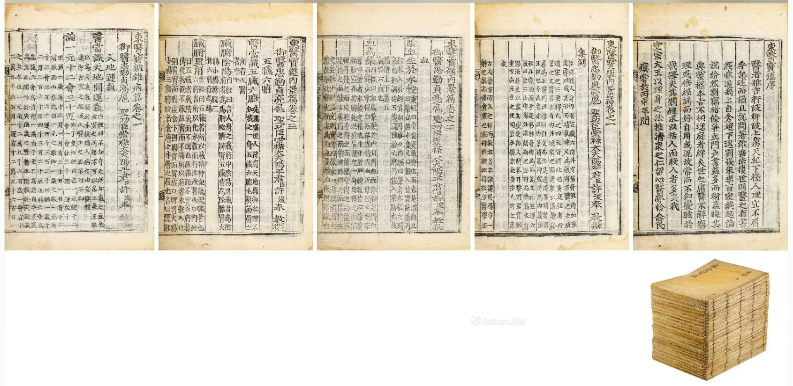

 点击图片可查看大图 · 原始图像 1691×825 px 未提供 东医宝鉴二十三卷 全 〔朝鲜〕许浚著 许浚 · 明代高丽刻本 成交记录未提供 估价RMB 30,000-50,000 记录信息 拍卖日期2025-07-12 拍卖公司孔网拍卖 拍卖专场古籍善本专场 创作年代明代高丽刻本 开本31.4×21cm 尺寸类型开本 高 × 宽31.4 × 21.0 cm 纸张原表未著录 成交价原文无成交价（未提供） 来源位置Excel 第 3 行